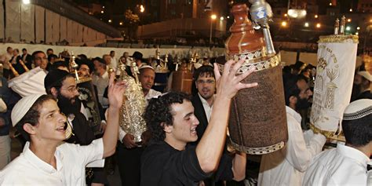

Tijdens de vorige les hebben we het gehad over het goede leven en hoe we praktisch met de wet bezig kunnen zijn. Hoe we ons leven kunnen invullen om onze naasten te dienen.
Weten jullie nog wat we hebben gedaan/besproken?
We hebben samen nieuwe wetten gemaakt voor Apeldoorn en het over de bergrede gehad, hoe Jezus de tien woorden nog een diepere laag geeft.
Ik heb jullie ook een challenge meegegeven. Weten jullie nog wat het was? Zijn jullie in de afgelopen weken ongeduldig geweest met iemand die erg traag fietste?

We gaan het vandaag hebben over 'de vreugde van de wet'. We gaan eerst naar een filmpje kijken. Een filmpje over de feestdag Simchat Thora, de vreugde van de wet.
Op Simchat Thora dankt het Joodse volk de HEER, omdat Hij zijn wet en onderwijzing gegeven heeft.
De Joden danken God tijdens Simchat Thora in een vrolijke viering voor de Thora (de Wet of onderwijzing van de HEER). Tijdens het feest dansen de Joden met de boekrollen van de Thora zeven keer door de synagoge (hun 'kerk').
De Joden lezen het Oude Testament ieder jaar in een volgorde door. Tijdens Simchat Thora lezen ze het laatste stukje van het 'rooster', maar beginnen ook direct aan het begin weer te lezen. Daardoor maken ze duidelijk dat het een proces is dat niet stopt. Om deze reden is Simchat Thora een vreugdevolle feestdag die de voltooiing van de studie van Gods woord viert en uitkijkt naar het opnieuw horen van deze woorden in het komende jaar.
We gaan nu samen een Psalm lezen. Psalm 1 Eerst de verzen 1
Wat zou de dichter daarmee willen zeggen? Wat betekent het?
Als je je inlaat met 'spotters' of mee gaat doen met dingen die tegen Gods bedoelingen ingaan, dan kan het steeds moeilijker worden om ermee te stoppen of eruit te stappen. Het geeft aan hoe diep je mee bent gegaan met mensen die kwaad doen.
Laten we nu de volgende verzen lezen.
Het is onmogelijk om de wet zelf helemaal gehoorzaam te zijn. Jezus wilt ons daarmee helpen. Hij wilt samen met ons het juk dragen. Hij was wel helemaal gehoorzaam aan de wet.
We hebben het gehad over afgoden. Dat mobieltjes ons enorm kunnen afleiden. We hebben het ook gehad over waarom het verkeerd is. Dat God graag centraal wil staan in ons leven. God wil een relatie met je aangaan.
Rust nemen voor God. Dat is nog best moeilijk. 5 min stil zijn blijkt een uitdaging! Toch laat God zien dat het belangrijk (en fijn) is om rust te nemen bij Hem en op te laden.
Respect voor je ouders gaat niet alleen om alles doen wat ze je zeggen. We kunnen wel op de schouders van onze ouders staan. Zij zijn een opstapje in ons leven. Maar je vindt ook je eigen manier om het te doen, denk maar aan het filmpje van La Luna
Tijdens deze meeting hebben we het erover gehad dat het bij gehoorzaamheid aan Gods wet gaat dan om meer dan de regels naleven. Niet doodslaan gaat ook over mensen niet belachelijk maken of bedreigen. We hebben ook eigen regels bedacht om onze naasten lief te hebben.
Wij gaan nu een poging wagen om zelf een lied of gedicht te maken waar elke volgende zin begint met een volgende letter in het alfabet. We willen een gedicht maken als eerbetoon aan de man die de wet heeft vervuld: Jezus.